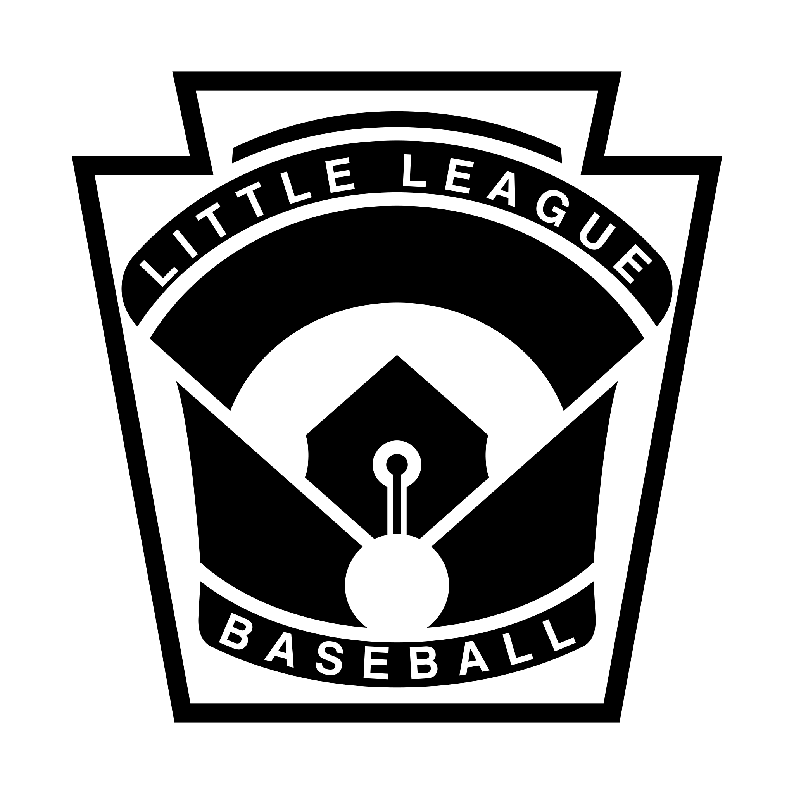
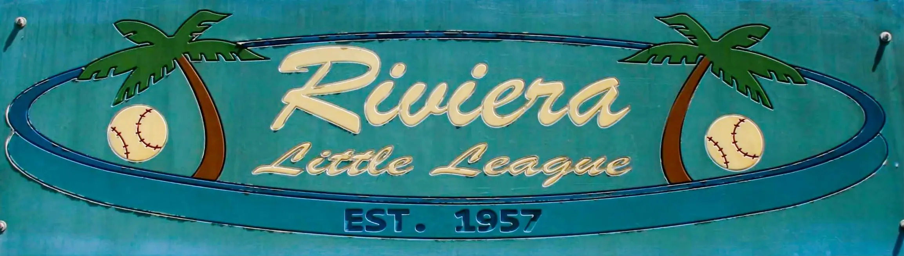

Samuel Leight
Baseball Career
Samuel Leight's Baseball Career
Little League Baseball
Little League Baseball is an organization that forms local leagues for kids aged 4 to 12 years. There are lots of rules to protect the players and ensure the games are fair. Little league is great fun for the players and the entire family! Little League Page

Riviera Little League is where Samuel played little league baseball. It was a great community and Sam and his family made lots of friends. It wasn't all a picnic, but a lot of joy came from those years playing ball in our community! Riviera Little League Page
